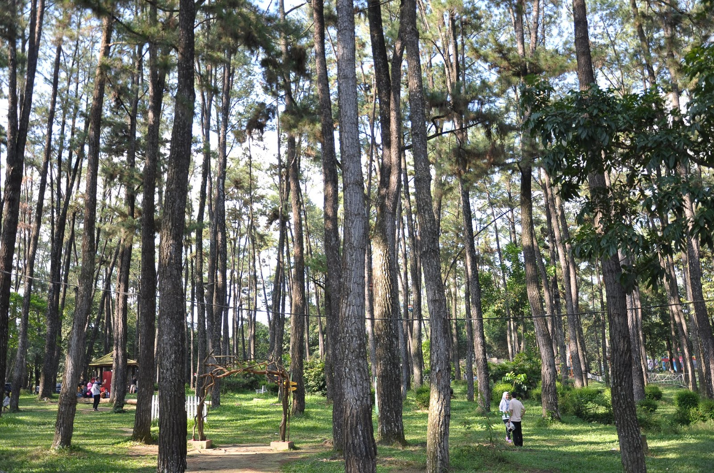

Keanekaragaman Fauna Kawasan
TWA Punti Kayu dihuni oleh ragam kelas satwa yang hidup liar secara bebas, meliputi Mamalia, Aves, Herpetofauna, dan Insecta.
Temuan Spesies Terproteksi & Langka: Podolestes coomansi
Kawasan ini menjadi habitat sangat penting bagi Capung Jarum (Podolestes coomansi) yang terdaftar dalam IUCN Red List.
| No | Dokumentasi | Satwa & Nama Ilmiah | Kelompok & Deskripsi Status |
|---|---|---|---|
| 1 |  |
Monyet Ekor PanjangMacaca fascicularis | Mamalia Liar Populasi primata alami yang hidup liar bebas di tajuk pohon pinus. |
| 2 |  |
Elang BondolHaliastur indus | Aves Dilindungi Burung pemangsa terproteksi yang bersarang di kanopi tinggi. |